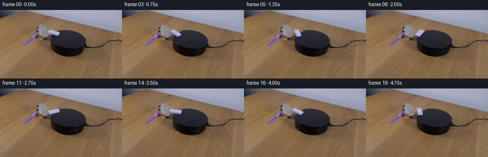
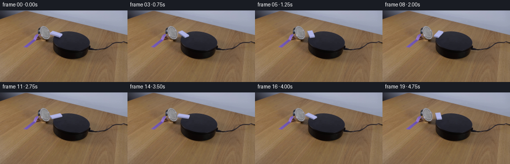
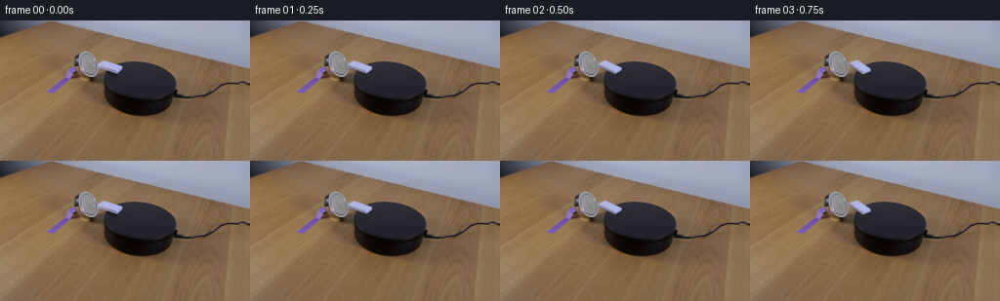
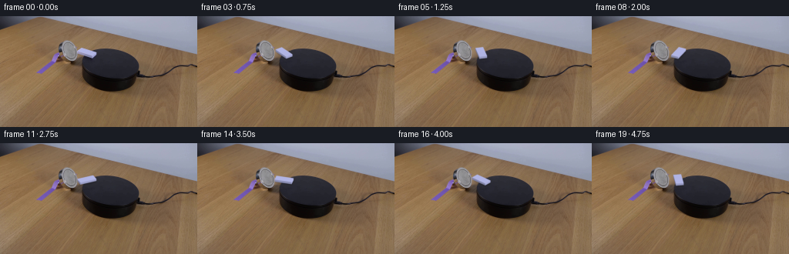
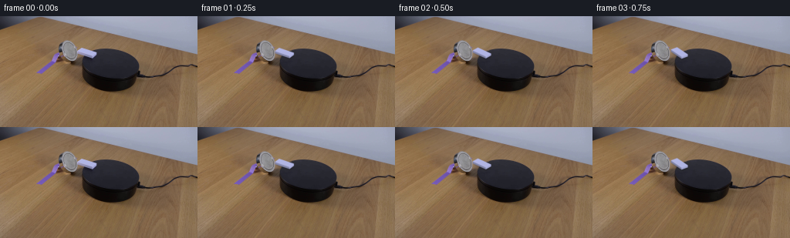

CODING AGENTS AS PIXEL WORLD MODELS
traex/GPT-6.1-Sol · 0096
点击播放 · 原生 RGB 像素
逐轮保存的候选
回放视频、检查图与代码变化。
每份候选均可单独播放。实际图片检查记录在下方工具轨迹中。
候选 01播放与检查图
点击播放 · 原生 RGB 像素

展开代码变化
--- 上一保存版本
+++ 本次保存版本
@@ -0,0 +1,161 @@
+from pathlib import Path
+import numpy as np
+from PIL import Image, ImageDraw
+import cv2
+from scipy.ndimage import gaussian_filter, map_coordinates
+import artifact_io
+
+ROOT=Path(__file__).resolve().parent
+H,W=144,256
+SS=5
+
+
+def polygon_mask(points,scale=1):
+ mask=Image.new('L',(W*scale,H*scale),0)
+ ImageDraw.Draw(mask).polygon([tuple(np.asarray(p)*scale) for p in points],fill=255)
+ return np.asarray(mask,dtype=np.float64)/255
+
+
+def background_plate(im):
+ y,x=np.mgrid[:H,:W].astype(float)
+ cx,cy,a,b,ang=142.62,64.31,37.18,21.53,.0517
+ dx=x-cx;dy=y-cy
+ qx=dx*np.cos(ang)+dy*np.sin(ang)
+ qy=-dx*np.sin(ang)+dy*np.cos(ang)
+ ellipse=(qx/a)**2+(qy/b)**2
+ # Locally infer the tabletop illumination, including the existing magnet's shadow.
+ def features(xx,yy):
+ u=(xx-112)/16; v=(yy-46)/14
+ return np.stack([u*0+1,u,v,u*u,u*v,v*v,u*u*v,u*v*v,v*v*v],-1)
+ good=(x>=101)&(x<=134)&(y>=33)&(y<=61)&(ellipse>1.10)&(im[:,:,0]-im[:,:,1]>17)&(im[:,:,1]-im[:,:,2]>13)
+ A=features(x[good],y[good]); vals=im[good]
+ coeff=np.linalg.lstsq(A,vals,rcond=None)[0]
+ table=features(x,y)@coeff
+ # Color and fine grain of the matte black platform are inferred from its visible surface.
+ use=(x>128)&(x<163)&(y>43)&(y<64)&(ellipse<.90)
+ design=np.stack([x*0+1,x-143,y-52,(y-52)**2],-1)
+ c=np.linalg.lstsq(design[use],im[use],rcond=None)[0]
+ disk=design@c
+ rng=np.random.default_rng(73)
+ grain=gaussian_filter(rng.normal(size=(H,W)),.45)
+ disk+=grain[:,:,None]*.55
+ table+=grain[:,:,None]*1.1
+ # Smooth edge of the circular top surface.
+ inside=np.clip((1-ellipse)*17+.50,0,1)
+ analytic=table*(1-inside[:,:,None])+disk*inside[:,:,None]
+ hull=np.array([[104.7,40.5],[111.3,42.0],[126.1,46.8],[126.0,50.0],[121.5,55.8],[115.6,57.8],[108.0,54.0],[99.6,49.3],[99.6,44.8]])
+ mask=polygon_mask(hull)
+ mask=cv2.dilate(mask.astype(np.float32),np.ones((3,3),np.uint8))
+ mask=gaussian_filter(mask,.65)
+ # Keep the powerful magnet's narrow metal rim completely locked off.
+ mask*=np.clip((x-99.3)/1.0,0,1)
+ plate=im*(1-mask[:,:,None])+analytic*mask[:,:,None]
+ return np.clip(plate,0,255),mask
+
+
+L=23.44
+D=9.8
+K=.51
+TH0=np.deg2rad(29.25)
+CENTER=np.array([112.5,46.9])
+THICK=3.25
+
+
+def geometry(angle):
+ u=np.array([np.cos(angle),K*np.sin(angle)])
+ v=np.array([-np.sin(angle),K*np.cos(angle)])
+ top=np.array([CENTER-u*L/2-v*D/2,CENTER+u*L/2-v*D/2,CENTER+u*L/2+v*D/2,CENTER-u*L/2+v*D/2])
+ bottom=top+np.array([0,THICK])
+ return top,bottom,u,v
+
+
+def top_texture(im):
+ # Sample only the clean, unmarked plastic face; its cool reflected illumination is retained.
+ th,tw=64,128
+ p,_,_,_=geometry(TH0)
+ yy,xx=np.mgrid[:th,:tw]
+ uu=(xx+.5)/tw;vv=(yy+.5)/th
+ xy=p[0]+uu[:,:,None]*(p[1]-p[0])+vv[:,:,None]*(p[3]-p[0])
+ tex=cv2.remap(im.astype(np.float32),xy[:,:,0].astype(np.float32),xy[:,:,1].astype(np.float32),cv2.INTER_LINEAR)
+ central=(uu>.16)&(uu<.84)&(vv>.22)&(vv<.75)&(tex[:,:,2]>220)&(tex[:,:,0]>173)
+ mean=np.median(tex[central],axis=0)
+ # Replace mixed antialias pixels at the face border, not true object texture.
+ ok=(tex[:,:,2]>222)&(tex[:,:,0]>173)
+ tex=np.where(ok[:,:,None],tex,mean)
+ return gaussian_filter(tex,(1.0,1.0,0)).astype(np.float32)
+
+
+def render(plate,angle,texture):
+ top,bottom,u,v=geometry(angle)
+ hs,ws=H*SS,W*SS
+ canvas=cv2.resize(plate.astype(np.float32),(ws,hs),interpolation=cv2.INTER_CUBIC)
+ # Low, soft cast shadow and tighter contact shadow, following the rotating block.
+ sm=polygon_mask(bottom+np.array([.9,1.4]),SS)
+ sm=gaussian_filter(sm,SS*.85)*.16
+ cm=polygon_mask(bottom+np.array([.35,.5]),SS)
+ cm=gaussian_filter(cm,SS*.35)*.08
+ shadow=np.clip(sm+cm,0,.3)
+ canvas*=1-shadow[:,:,None]
+ # Render visible vertical faces from back to front. Their normals rotate with the object.
+ faces=[]
+ n_u=np.array([np.cos(angle),np.sin(angle)])
+ n_v=np.array([-np.sin(angle),np.cos(angle)])
+ for i,j,n in [(0,1,-n_v),(1,2,n_u),(2,3,n_v),(3,0,-n_u)]:
+ if n[1]>.001:
+ faces.append((np.mean(bottom[[i,j],1]),i,j,n))
+ faces.sort(key=lambda p:p[0])
+ ygrid=np.arange(hs)[:,None]/SS
+ xgrid=np.arange(ws)[None,:]/SS
+ for _,i,j,n in faces:
+ poly=np.array([top[i],top[j],bottom[j],bottom[i]])
+ alpha=polygon_mask(poly,SS).astype(np.float32)
+ # Warm directional key light together with blue ambient reflections from above.
+ dot=n@np.array([.976,-.217])
+ gain=.823+.143*dot
+ vec=top[j]-top[i]
+ if abs(vec[0])>.001:
+ edge_y=top[i,1]+(xgrid-top[i,0])*vec[1]/vec[0]
+ z=np.clip((ygrid-edge_y)/THICK,0,1)
+ else:
+ z=np.full((hs,ws),.5)
+ gainmap=gain+.075*(1-z)-.028*z
+ color=texture.mean((0,1))[None,None,:]*gainmap[:,:,None]
+ canvas=canvas*(1-alpha[:,:,None])+color*alpha[:,:,None]
+ # Affine inverse mapping renders the rigid broad face with original image-derived material.
+ transform=np.column_stack([top[1]-top[0],top[3]-top[0]])
+ inverse=np.linalg.inv(transform)
+ qx=xgrid-top[0,0];qy=ygrid-top[0,1]
+ tu=inverse[0,0]*qx+inverse[0,1]*qy
+ tv=inverse[1,0]*qx+inverse[1,1]*qy
+ tex=cv2.remap(texture,(tu*texture.shape[1]-.5).astype(np.float32),(tv*texture.shape[0]-.5).astype(np.float32),cv2.INTER_LINEAR,borderMode=cv2.BORDER_REPLICATE)
+ alpha=polygon_mask(top,SS).astype(np.float32)
+ canvas=canvas*(1-alpha[:,:,None])+tex*alpha[:,:,None]
+ canvas=cv2.GaussianBlur(canvas,(0,0),SS*.27)
+ out=cv2.resize(canvas,(W,H),interpolation=cv2.INTER_AREA)
+ # The camera and every static pixel remain fixed. Limit filtering strictly to the object area.
+ influence=polygon_mask(np.vstack([top,bottom,bottom+np.array([1,2])]))
+ # A convex mask is needed even when the vertex order in the combined set is not monotonic.
+ hull=cv2.convexHull(np.vstack([top,bottom,bottom+np.array([1,2])]).astype(np.float32)).reshape(-1,2)
+ influence=polygon_mask(hull)
+ influence=cv2.dilate(influence.astype(np.float32),np.ones((7,7),np.uint8))
+ influence=gaussian_filter(influence,.5)
+ return plate*(1-influence[:,:,None])+out*influence[:,:,None]
+
+
+def main():
+ im=np.array(Image.open(ROOT/'first_frame.png').convert('RGB'),dtype=np.float64)
+ plate,remove_mask=background_plate(im)
+ Image.fromarray(np.rint(plate).astype(np.uint8)).save(ROOT/'.tmp'/'background.png')
+ texture=top_texture(im)
+ frames=[im.astype(np.uint8)]
+ for i in range(1,20):
+ t=i/4
+ # One smooth, clockwise in-place rotation; no cut, hand, camera motion or change in setup.
+ travel=np.deg2rad(53)*(t-.38*(1-np.exp(-t/.38)))
+ angle=TH0+travel
+ out=render(plate,angle,texture)
+ frames.append(np.clip(np.rint(out),0,255).astype(np.uint8))
+ artifact_io.save(np.stack(frames),ROOT)
+
+if __name__=='__main__':
+ main()
候选 02播放与检查图
点击播放 · 原生 RGB 像素


展开代码变化
--- 上一保存版本
+++ 本次保存版本
@@ -41,7 +41,11 @@
disk+=grain[:,:,None]*.55
table+=grain[:,:,None]*1.1
# Smooth edge of the circular top surface.
- inside=np.clip((1-ellipse)*17+.50,0,1)
+ # Continue the partly hidden left circumference through the block's footprint.
+ edge_y=np.array([40,41,42,43,44,45,46,47,48,49,50,51,52,53,54,55,56,57,58,59,60,63])
+ edge_x=np.array([136,132,129,124.6,121.4,118.1,115.8,113.8,112.1,110.7,109.7,108.8,108.3,107.6,107.1,106.8,106.5,106.4,106.1,106.1,105.7,105.7])
+ left=np.interp(y,edge_y,edge_x)
+ inside=np.clip((x-left)/1.25+.5,0,1)
analytic=table*(1-inside[:,:,None])+disk*inside[:,:,None]
hull=np.array([[104.7,40.5],[111.3,42.0],[126.1,46.8],[126.0,50.0],[121.5,55.8],[115.6,57.8],[108.0,54.0],[99.6,49.3],[99.6,44.8]])
mask=polygon_mask(hull)
@@ -53,12 +57,12 @@
return np.clip(plate,0,255),mask
-L=23.44
-D=9.8
+L=22.85
+D=10.15
K=.51
-TH0=np.deg2rad(29.25)
-CENTER=np.array([112.5,46.9])
-THICK=3.25
+TH0=np.deg2rad(30.2)
+CENTER=np.array([112.6,46.45])
+THICK=2.70
def geometry(angle):
@@ -133,7 +137,6 @@
canvas=cv2.GaussianBlur(canvas,(0,0),SS*.27)
out=cv2.resize(canvas,(W,H),interpolation=cv2.INTER_AREA)
# The camera and every static pixel remain fixed. Limit filtering strictly to the object area.
- influence=polygon_mask(np.vstack([top,bottom,bottom+np.array([1,2])]))
# A convex mask is needed even when the vertex order in the combined set is not monotonic.
hull=cv2.convexHull(np.vstack([top,bottom,bottom+np.array([1,2])]).astype(np.float32)).reshape(-1,2)
influence=polygon_mask(hull)
候选 03播放与检查图
点击播放 · 原生 RGB 像素


展开代码变化
--- 上一保存版本
+++ 本次保存版本
@@ -2,7 +2,7 @@
import numpy as np
from PIL import Image, ImageDraw
import cv2
-from scipy.ndimage import gaussian_filter, map_coordinates
+from scipy.ndimage import gaussian_filter
import artifact_io
ROOT=Path(__file__).resolve().parent
@@ -142,6 +142,7 @@
influence=polygon_mask(hull)
influence=cv2.dilate(influence.astype(np.float32),np.ones((7,7),np.uint8))
influence=gaussian_filter(influence,.5)
+ influence*=np.clip((np.arange(W)[None,:]-99.5)/.8,0,1)
return plate*(1-influence[:,:,None])+out*influence[:,:,None]
可观测工具轨迹
实际执行的命令与返回图片。
命令 1exit 0
/bin/bash -lc 'ls -la && cat prompt.txt && cat GENERATION_RULES.md'
命令 2exit 0
/bin/bash -lc "cat artifact_io.py && python - <<'PY'
from PIL import Image
import numpy as np
im=np.array(Image.open('first_frame.png'))
print(im.shape)
for y in range(0,144,4):
s=''
for x in range(0,256,3):
r,g,b=map(int,im[y:y+4,x:x+3,:3].mean((0,1)))
v=(r+g+b)/3
if max(r,g,b)-min(r,g,b)>25:
c='R' if r>g and r>b else 'B' if b>r and b>g else 'G'
else: c=' .:-=+*#%@'[min(9,int(v/256*10))]
s+=c
print(f'{y:3}',s)
PY"命令 3exit 0
/bin/bash -lc "python - <<'PY'
from PIL import Image
import numpy as np
im=np.array(Image.open('first_frame.png'))
# luminance ASCII at native resolution area
for y in range(28,98):
s=''
for x in range(65,181):
r,g,b=map(int,im[y,x,:3]);v=(r*.2126+g*.7152+b*.0722)
s+=' .,:;irsXA253hMHGS#9B&@'[min(21,int(v/256*22))]
print(f'{y:3} '+s)
print('\\nsamples')
for y in range(30,86,3):
print(y, ' '.join(f'{x}:{tuple(im[y,x,:3])}' for x in range(70,177,6)))
PY"命令 4exit 0
/bin/bash -lc "python - <<'PY'
from PIL import Image
import numpy as np
im=np.array(Image.open('first_frame.png')).astype(int)
for y in range(30,63):
s=''
for x in range(72,132):
r,g,b=im[y,x,:3]
if b-r>25: c='B'
elif r-g>14 and g-b>9: c='t'
elif max(r,g,b)-min(r,g,b)<16 and r>115: c='W' if r>150 else 'w'
elif r<60 and g<60: c='.'
else: c='o'
s+=c
print(f'{y:2} {s}')
PY"命令 5exit 0
/bin/bash -lc "python - <<'PY'
from PIL import Image
import numpy as np
im=np.array(Image.open('first_frame.png')).astype(int)
for y in range(38,59):
print(y,[(x,tuple(im[y,x])) for x in range(95,130) if im[y,x,2]-im[y,x,0]>18 and im[y,x,0]>60])
PY"命令 6exit 0
/bin/bash -lc "python - <<'PY'
import numpy as np
from PIL import Image
I=np.asarray(Image.open('first_frame.png'))
for y in range(40,83):
xs=np.where((I[y,:,0]<58)&(I[y,:,1]<58)&(I[y,:,2]<75))[0];xs=xs[(xs>104)&(xs<182)]
print(y,(xs.min(),xs.max()) if len(xs) else None)
import importlib.util
for m in ['scipy','cv2']:
print(m, bool(importlib.util.find_spec(m)))
PY"命令 7exit 0
/bin/bash -lc "cat > .tmp/analyze.py <<'PY'
import numpy as np
from PIL import Image
I=np.asarray(Image.open('first_frame.png')).astype(float)
# reference positions for color near replaced background
for y in range(40,57):
print(y, ' '.join('%d:%d,%d,%d'%(x,*I[y,x]) for x in [98,99,100,101,102,103,104,105,106,107,108,109,110,111,112,113,114,115,116,117,118,119,120,121,122,123,124,125,126,127]))
PY
python .tmp/analyze.py"命令 8exit 0
/bin/bash -lc "python - <<'PY'
import numpy as np
from PIL import Image
from scipy.optimize import least_squares
I=np.array(Image.open('first_frame.png')).astype(float)
# right edge table-platform cross normalized chroma
points=[]
for y in range(43,71):
for x in range(130,190):
if I[y,x,0]>64 and I[y,x-1,0]<64:
p=[x-.5,y]; points.append(p);break
# top-left edge unoccluded lower down
for y in range(57,71):
x=next((x for x in range(101,130) if I[y,x,0]<64),None)
if x is not None:points.append([x-.5,y])
pts=np.array(points)
def fn(p):
cx,cy,a,b,angle=p
R=np.array([[np.cos(angle),np.sin(angle)],[-np.sin(angle),np.cos(angle)]])
q=(pts-p[:2])@R.T
return (q[:,0]/a)**2+(q[:,1]/b)**2-1
res=least_squares(fn,[143,61,39,18,.28])
print(res.x, np.mean(fn(res.x)**2));print(points)
PY"命令 9exit 0
/bin/bash -lc "cat > generate.py <<'PY'
from pathlib import Path
import numpy as np
from PIL import Image, ImageDraw
import cv2
from scipy.ndimage import gaussian_filter, map_coordinates
import artifact_io
ROOT=Path(__file__).resolve().parent
H,W=144,256
SS=5
def polygon_mask(points,scale=1):
mask=Image.new('L',(W*scale,H*scale),0)
ImageDraw.Draw(mask).polygon([tuple(np.asarray(p)*scale) for p in points],fill=255)
return np.asarray(mask,dtype=np.float64)/255
def background_plate(im):
y,x=np.mgrid[:H,:W].astype(float)
cx,cy,a,b,ang=142.62,64.31,37.18,21.53,.0517
dx=x-cx;dy=y-cy
qx=dx*np.cos(ang)+dy*np.sin(ang)
qy=-dx*np.sin(ang)+dy*np.cos(ang)
ellipse=(qx/a)**2+(qy/b)**2
# Locally infer the tabletop illumination, including the existing magnet's shadow.
def features(xx,yy):
u=(xx-112)/16; v=(yy-46)/14
return np.stack([u*0+1,u,v,u*u,u*v,v*v,u*u*v,u*v*v,v*v*v],-1)
good=(x>=101)&(x<=134)&(y>=33)&(y<=61)&(ellipse>1.10)&(im[:,:,0]-im[:,:,1]>17)&(im[:,:,1]-im[:,:,2]>13)
A=features(x[good],y[good]); vals=im[good]
coeff=np.linalg.lstsq(A,vals,rcond=None)[0]
table=features(x,y)@coeff
# Color and fine grain of the matte black platform are inferred from its visible surface.
use=(x>128)&(x<163)&(y>43)&(y<64)&(ellipse<.90)
design=np.stack([x*0+1,x-143,y-52,(y-52)**2],-1)
c=np.linalg.lstsq(design[use],im[use],rcond=None)[0]
disk=design@c
rng=np.random.default_rng(73)
grain=gaussian_filter(rng.normal(size=(H,W)),.45)
disk+=grain[:,:,None]*.55
table+=grain[:,:,None]*1.1
# Smooth edge of the circular top surface.
inside=np.clip((1-ellipse)*17+.50,0,1)
analytic=table*(1-inside[:,:,None])+disk*inside[:,:,None]
hull=np.array([[104.7,40.5],[111.3,42.0],[126.1,46.8],[126.0,50.0],[121.5,55.8],[115.6,57.8],[108.0,54.0],[99.6,49.3],[99.6,44.8]])
mask=polygon_mask(hull)
mask=cv2.dilate(mask.astype(np.float32),np.ones((3,3),np.uint8))
mask=gaussian_filter(mask,.65)
# Keep the powerful magnet's narrow metal rim completely locked off.
mask*=np.clip((x-99.3)/1.0,0,1)
plate=im*(1-mask[:,:,None])+analytic*mask[:,:,None]
return np.clip(plate,0,255),mask
L=23.44
D=9.8
K=.51
TH0=np.deg2rad(29.25)
CENTER=np.array([112.5,46.9])
THICK=3.25
def geometry(angle):
u=np.array([np.cos(angle),K*np.sin(angle)])
v=np.array([-np.sin(angle),K*np.cos(angle)])
top=np.array([CENTER-u*L/2-v*D/2,CENTER+u*L/2-v*D/2,CENTER+u*L/2+v*D/2,CENTER-u*L/2+v*D/2])
bottom=top+np.array([0,THICK])
return top,bottom,u,v
def top_texture(im):
# Sample only the clean, unmarked plastic face; its cool reflected illumination is retained.
th,tw=64,128
p,_,_,_=geometry(TH0)
yy,xx=np.mgrid[:th,:tw]
uu=(xx+.5)/tw;vv=(yy+.5)/th
xy=p[0]+uu[:,:,None]*(p[1]-p[0])+vv[:,:,None]*(p[3]-p[0])
tex=cv2.remap(im.astype(np.float32),xy[:,:,0].astype(np.float32),xy[:,:,1].astype(np.float32),cv2.INTER_LINEAR)
central=(uu>.16)&(uu<.84)&(vv>.22)&(vv<.75)&(tex[:,:,2]>220)&(tex[:,:,0]>173)
mean=np.median(tex[central],axis=0)
# Replace mixed antialias pixels at the face border, not true object texture.
ok=(tex[:,:,2]>222)&(tex[:,:,0]>173)
tex=np.where(ok[:,:,None],tex,mean)
return gaussian_filter(tex,(1.0,1.0,0)).astype(np.float32)
def render(plate,angle,texture):
top,bottom,u,v=geometry(angle)
hs,ws=H*SS,W*SS
canvas=cv2.resize(plate.astype(np.float32),(ws,hs),interpolation=cv2.INTER_CUBIC)
# Low, soft cast shadow and tighter contact shadow, following the rotating block.
sm=polygon_mask(bottom+np.array([.9,1.4]),SS)
sm=gaussian_filter(sm,SS*.85)*.16
cm=polygon_mask(bottom+np.array([.35,.5]),SS)
cm=gaussian_filter(cm,SS*.35)*.08
shadow=np.clip(sm+cm,0,.3)
canvas*=1-shadow[:,:,None]
# Render visible vertical faces from back to front. Their normals rotate with the object.
faces=[]
n_u=np.array([np.cos(angle),np.sin(angle)])
n_v=np.array([-np.sin(angle),np.cos(angle)])
for i,j,n in [(0,1,-n_v),(1,2,n_u),(2,3,n_v),(3,0,-n_u)]:
if n[1]>.001:
faces.append((np.mean(bottom[[i,j],1]),i,j,n))
faces.sort(key=lambda p:p[0])
ygrid=np.arange(hs)[:,None]/SS
xgrid=np.arange(ws)[None,:]/SS
for _,i,j,n in faces:
poly=np.array([top[i],top[j],bottom[j],bottom[i]])
alpha=polygon_mask(poly,SS).astype(np.float32)
# Warm directional key light together with blue ambient reflections from above.
dot=n@np.array([.976,-.217])
gain=.823+.143*dot
vec=top[j]-top[i]
if abs(vec[0])>.001:
edge_y=top[i,1]+(xgrid-top[i,0])*vec[1]/vec[0]
z=np.clip((ygrid-edge_y)/THICK,0,1)
else:
z=np.full((hs,ws),.5)
gainmap=gain+.075*(1-z)-.028*z
color=texture.mean((0,1))[None,None,:]*gainmap[:,:,None]
canvas=canvas*(1-alpha[:,:,None])+color*alpha[:,:,None]
# Affine inverse mapping renders the rigid broad face with original image-derived material.
transform=np.column_stack([top[1]-top[0],top[3]-top[0]])
inverse=np.linalg.inv(transform)
qx=xgrid-top[0,0];qy=ygrid-top[0,1]
tu=inverse[0,0]*qx+inverse[0,1]*qy
tv=inverse[1,0]*qx+inverse[1,1]*qy
tex=cv2.remap(texture,(tu*texture.shape[1]-.5).astype(np.float32),(tv*texture.shape[0]-.5).astype(np.float32),cv2.INTER_LINEAR,borderMode=cv2.BORDER_REPLICATE)
alpha=polygon_mask(top,SS).astype(np.float32)
canvas=canvas*(1-alpha[:,:,None])+tex*alpha[:,:,None]
canvas=cv2.GaussianBlur(canvas,(0,0),SS*.27)
out=cv2.resize(canvas,(W,H),interpolation=cv2.INTER_AREA)
# The camera and every static pixel remain fixed. Limit filtering strictly to the object area.
influence=polygon_mask(np.vstack([top,bottom,bottom+np.array([1,2])]))
# A convex mask is needed even when the vertex order in the combined set is not monotonic.
hull=cv2.convexHull(np.vstack([top,bottom,bottom+np.array([1,2])]).astype(np.float32)).reshape(-1,2)
influence=polygon_mask(hull)
influence=cv2.dilate(influence.astype(np.float32),np.ones((7,7),np.uint8))
influence=gaussian_filter(influence,.5)
return plate*(1-influence[:,:,None])+out*influence[:,:,None]
def main():
im=np.array(Image.open(ROOT/'first_frame.png').convert('RGB'),dtype=np.float64)
plate,remove_mask=background_plate(im)
Image.fromarray(np.rint(plate).astype(np.uint8)).save(ROOT/'.tmp'/'background.png')
texture=top_texture(im)
frames=[im.astype(np.uint8)]
for i in range(1,20):
t=i/4
# One smooth, clockwise in-place rotation; no cut, hand, camera motion or change in setup.
travel=np.deg2rad(53)*(t-.38*(1-np.exp(-t/.38)))
angle=TH0+travel
out=render(plate,angle,texture)
frames.append(np.clip(np.rint(out),0,255).astype(np.uint8))
artifact_io.save(np.stack(frames),ROOT)
if __name__=='__main__':
main()
PY
OPENBLAS_NUM_THREADS=1 python generate.py"命令 10exit 0
/bin/bash -lc "python - <<'PY'
import numpy as np
from PIL import Image
import generate as g
I=np.array(Image.open('first_frame.png')).astype(float)
print('geometry',g.geometry(g.TH0)[0]);print('mean',g.top_texture(I).mean((0,1)))
for k in ['first_frame.png','.tmp/background.png','frames/01.png','frames/04.png','frames/09.png','frames/14.png','frames/19.png']:
im=np.array(Image.open(k));print('\\n',k)
for y in range(37,60):
st=''
for x in range(98,132):
r,gr,b=map(int,im[y,x]);
if r>163 and b-r>25:c='W'
elif r>90 and b-r>22:c='w'
elif r-gr>16 and gr-b>11:c='t'
elif r<60:c='.'
else:c='o'
st+=c
print(f'{y:2} {st}')
PY"命令 11exit 0
/bin/bash -lc "python - <<'PY' from scipy.optimize import least_squares import numpy as np pts=np.array([[136,41.8],[126,43],[122,44],[109,52],[108,53],[107,56],[106,60],[106,62],[107,68],[148.5,43],[153.5,44],[157.5,45],[160.5,46],[162.5,47],[164.5,48],[166.5,49],[168.5,50],[170.5,51],[171.5,52],[174.5,54],[175.5,55],[176.5,56],[176.5,57],[177.5,58],[178.5,59],[178.5,60],[179.5,61],[179.5,62],[179.5,64],[179.5,67],[178.5,69]]) def fn(p): cx,cy,a,b,angle=p R=np.array([[np.cos(angle),np.sin(angle)],[-np.sin(angle),np.cos(angle)]]) q=(pts-p[:2])@R.T return (q[:,0]/a)**2+(q[:,1]/b)**2-1 p=least_squares(fn,[143,61,39,18,.28]).x print(p,'err',np.mean(fn(p)**2)); for row in [42,43,44,45,46,47,48,49,50,51,52,53,54,55]: xx=np.linspace(95,190,2000);yy=np.full_like(xx,row);cx,cy,a,b,ang=p; dx=xx-cx;dy=yy-cy;q=((dx*np.cos(ang)+dy*np.sin(ang))/a)**2+((-dx*np.sin(ang)+dy*np.cos(ang))/b)**2 xs=xx[q<=1];print(row, (xs.min(),xs.max()) if len(xs) else None) PY"
命令 12exit 0
/bin/bash -lc "python - <<'PY'
import numpy as np
from PIL import Image
import generate as g
im=np.array(Image.open('first_frame.png')).astype(float)
plate,mask=g.background_plate(im)
tex=g.top_texture(im)
out=g.render(plate,g.TH0,tex)
area=(mask>.02)|((np.indices(mask.shape)[1]>98)&(np.indices(mask.shape)[1]<128)&(np.indices(mask.shape)[0]>39)&(np.indices(mask.shape)[0]<56))
print('reconstruction mae',np.abs(out-im)[area].mean())
print('orig sum foreground',im[40:56,100:126].sum((0,1)), 'out sum',out[40:56,100:126].sum((0,1)))
for y in range(43,55):
print(y, ' '.join(f'{x}: {np.round(plate[y,x]).astype(int).tolist()}' for x in range(102,123,4)))
PY"命令 13exit 0
/bin/bash -lc "OPENBLAS_NUM_THREADS=1 python generate.py && python - <<'PY'
import numpy as np
from PIL import Image
import generate as g
im=np.array(Image.open('first_frame.png')).astype(float);plate,mask=g.background_plate(im);tex=g.top_texture(im)
r=g.render(plate,g.TH0,tex)
print('geometry',g.geometry(g.TH0)[0]);print('mae',np.abs(r-im)[mask>.03].mean())
for name in ['.tmp/background.png','frames/01.png','frames/04.png']:
a=np.array(Image.open(name));print(name)
for y in range(40,57):
s=''
for x in range(98,130):
R,G,B=map(int,a[y,x]);s+='W' if R>163 and B-R>25 else 'w' if R>90 and B-R>22 else 't' if R-G>16 and G-B>11 else '.' if R<60 else 'o'
print(y,s)
print('unchanged',np.mean(np.array(Image.open('frames/19.png'))==im))
PY"命令 14exit 0
/bin/bash -lc "OPENBLAS_NUM_THREADS=1 python generate.py && python - <<'PY'
from PIL import Image
import numpy as np
from pathlib import Path
frames=np.stack([np.array(Image.open(p)) for p in sorted(Path('frames').glob('*.png'))])
assert frames.shape==(20,144,256,3)
assert frames.dtype==np.uint8
assert np.array_equal(frames[0],np.array(Image.open('first_frame.png')))
pixels=np.load('pixels.npz')['pixels']
assert pixels.shape==(144,256,20)
print('Validated 20 RGB frames, exact first frame, and saved pixels.npz/index.html.')
PY"保存候选 3 份；完成命令 14 次；可验证图片返回 0 张。原始 API 响应与完整日志保留在本地。